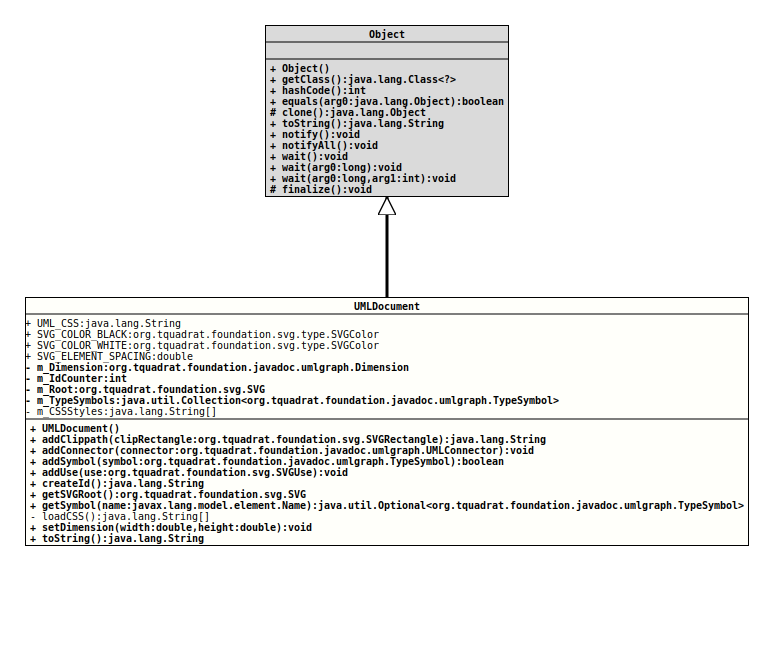

Class UMLDocument
java.lang.Object
org.tquadrat.foundation.javadoc.umlgraph.UMLDocument
@ClassVersion(sourceVersion="$Id: UMLDocument.java 825 2021-01-03 17:50:44Z tquadrat $")
@API(status=INTERNAL,
since="0.0.5")
public class UMLDocument
extends Object
The container for a UML diagram.
- Author:
- Thomas Thrien (thomas.thrien@tquadrat.org)
- Version:
- $Id: UMLDocument.java 825 2021-01-03 17:50:44Z tquadrat $
- Since:
- 0.0.5
- UML Diagram
-

UML Diagram for "org.tquadrat.foundation.javadoc.umlgraph.UMLDocument"
{kind=link}
-
Field Summary
FieldsModifier and TypeFieldDescriptionprivate static final String[]The CSS styles.private DimensionWidth and height for this UML diagram.private intThe id counter.private final org.tquadrat.foundation.svg.SVGThe SVG that represents the diagram.private final Collection<TypeSymbol>The SVG symbols representing the types.static final org.tquadrat.foundation.svg.type.SVGColorThe colour 'black'.static final org.tquadrat.foundation.svg.type.SVGColorThe colour 'white'.static final doubleThe spacing between UML graph elements: 50.0 px.static final StringThe name of the CSS resource file: "resources/uml.css". -
Constructor Summary
Constructors -
Method Summary
Modifier and TypeMethodDescriptionfinal StringaddClippath(org.tquadrat.foundation.svg.SVGRectangle clipRectangle) Creates an SVG<clipPath>element from the given rectangle and adds it to the SVG root element for this UML document.final voidaddConnector(UMLConnector connector) Adds a UML connector for two type elements to this UML document.final booleanaddSymbol(TypeSymbol symbol) Adds the symbol for a type element to the UML documentfinal voidaddUse(org.tquadrat.foundation.svg.SVGUse use) Places a symbol in the output diagram.final StringcreateId()Creates a new id that is unique inside the current UML document instance.final org.tquadrat.foundation.svg.SVGReturns the SVG root element for this UML document.final Optional<TypeSymbol>Returns the symbol with for the type element with the given name from this UML document.private static final String[]loadCSS()Loads the CSS from the resources.final voidsetDimension(double width, double height) Sets the width and height for the UML diagram.final StringtoString()
){kind=link}
){kind=link}
-
Field Details
-
UML_CSS
The name of the CSS resource file: "resources/uml.css".- See Also:
-
SVG_COLOR_BLACK
The colour 'black'. -
SVG_COLOR_WHITE
The colour 'white'. -
SVG_ELEMENT_SPACING
The spacing between UML graph elements: 50.0 px.- See Also:
-
m_Dimension
Width and height for this UML diagram. -
m_IdCounter
The id counter.- See Also:
-
m_Root
The SVG that represents the diagram. -
m_TypeSymbols
The SVG symbols representing the types. -
m_CSSStyles
The CSS styles.
-
-
Constructor Details
-
UMLDocument
public UMLDocument()Creates a newUMLDocumentinstance.
-
-
Method Details
-
addClippath
Creates an SVG<clipPath>element from the given rectangle and adds it to the SVG root element for this UML document.- Parameters:
clipRectangle- The rectangle that defines the clip path.- Returns:
- The id of the new SVG
<clipPath>element. - See Also:
-
SVGClipPath
-
addConnector
Adds a UML connector for two type elements to this UML document.- Parameters:
connector- The connector.
-
addSymbol
Adds the symbol for a type element to the UML document- Parameters:
symbol- The symbol to add.- Returns:
trueif the symbol was added,falseif not.
-
addUse
Places a symbol in the output diagram.- Parameters:
use- The reference to the<symbol>element represent a type.
-
createId
Creates a new id that is unique inside the current UML document instance.- Returns:
- The new id.
-
getSVGRoot
Returns the SVG root element for this UML document.- Returns:
- The SVG root element.
-
getSymbol
Returns the symbol with for the type element with the given name from this UML document.- Parameters:
name- The name of the type element.- Returns:
- An instance of
Optionalthat contains the symbol.
-
loadCSS
Loads the CSS from the resources.- Returns:
- The CSS styles.
- Throws:
IOException- There is a problem on reading the resource with the CSS.
-
setDimension
Sets the width and height for the UML diagram.- Parameters:
width- The width.height- The height.
-
toString
-